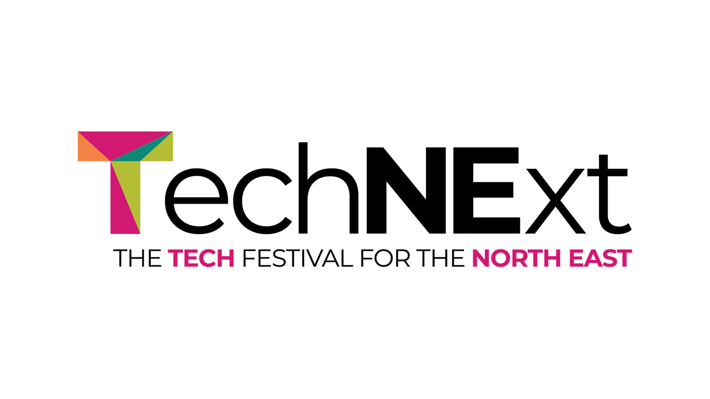

TechNExt 2024 - Day One
Digital Transformation: Leveraging Tech for Business Growth
Transformation in Action: Insights from Industry Leaders - Steve Morland, Mark Joyce, James Eastham, Julia Dann
Steve welcomed everyone to TechNExt and this is one of the three sessions they are running and this session will be about digital transformation where will have a panel discussion on different perspectives on digital transformation and then a couple of presentations. The panel has different skill sets with many of them working together before.
What is digital transformation?
Digital transformation is one of those buzzwords and people have been talking about it for a long time with taking paper systems online being an early version, so what does digital transformation mean. James mentioned it is about what a company does and doing this quicker and automating this, this is people or technology delivering things and delivering value in a more automated way and a lot of work at AWS was working with companies to get things into the cloud. Steve mentioned that people have done that first step but need to unlock that cost power of the cloud and make things more efficient.
Julia's current role is for Immediate Media is a large publishing company for things like Radio Times and Gardener's World magazines but the problem is print is a dying industry but main issue is how do you make same money online - some of this is advertising but a lot of it is subscriptions but is a challenge when a lot of that content out there is free, how do you get people coming back for example digital subscriptions for example 100,000 people subscribing, also need to look at what people are interested in online compared to print such as podcasts and webinars, make these things more appealing in a modern world. Steve mentioned people want more modern content and video online and Julia mentioned people are investing in different subscription models such as podcasts or people just want a version of the magazine on their phone such as making recipes easy to read so the app doesn't darken so they can do it hands free. Julia mentioned there has been a big understanding the need to make this change and print subscriptions is a mad world trying to understand the change and processes is a massive challenge that is harder to sell to people and telling people who have been in the industry for years they need to make changes is difficult.
Mark mentioned digital transformation has taken on different forms including failed transformation but there are also ones that have changed people's lives. In Preventx they have been trying to digitise NHS records and have been passionate about building relationships to enhance customer experience for companies like PurpleBricks where are disrupting a market from a human led process and trying to digitise it, what is the right human touch point and where is the right place to introduce technology as can really improve a customer's life through technology. Starting with a blank page can be a challenge, in the startup scaleup space you are starting with a real problem you have cross functional teams working on this, don't have to worry about methodologies, you have a problem and you are talking to customers about a problem and the pain points but organisationally to create the pull model behind digital transformation you have to get everyone onboard.
James mentioned working on problem statements, with organisations who have been around for years have lost focus on what is they are trying to solve, they were trying to understand what is they are trying to do and build such as microservices and modernise, need to understand what they need to do and get that problem statement together. Developer experience enables a tech team to do a transformation, with companies they have worked with they were building something on top of Kubernetes but they didn't have a reason, they didn't know if the technology was serving the problem or the people, need to understand why you are using the technology and need to understand the goal.
Julia mentioned when business has been changing into a multimedia business kind of depends but there were good foundations, there were those first set of services then microservices but now at stage realising that you don't need to build everything yourself, it is getting to that stage you can't do everything yourself. If you want to be current on something it is starting to thing about alternatives to own customer login system and use something else. Subscriptions is something they have looked at but now they want to do bundles or bring in more services and it is always evolving. Digital transformation is always evolving and it was the right decision when they did it three years ago but it is taking people on a journey and avoid a them and us situation.
James mentioned some systems can be a couple of decades old or older can be quite difficult to do and Julia mentioned you can get a lot of buy in when there is a lot of tech debt and give some time to modernise for small changes but it can be a hard sell but if trying to do things that improve performance but if people are taking months to do something that is the same can be a challenge but it will be ready for the future so may build something where aren't better off for now but will be in the months and can add more things but can be hard to not progress new features but when you do you can do them in half the time or you can move things to slightly different architecture.
Mark said about developing something that is of value where companies have a set growth plan is a lot easier where change is a given as you don't have to convince anyone to the why, but when more established business can be a challenge. Things can emerge as you go but can be easier to get the jeopardy to drive transformation but want to drive something sustainable those that have a shorter horizon can be hard to do so need to have an execution strategy but those who want to drive and disrupt can do that but there is a lot of pressure to deliver at speed. You can see these hypergrowth successes but then the reputation becomes valuable, and this stops experimentation and then start looking at shared services and global platforms but can slow down innovation and spend time consolidating platforms instead.
James mentioned that people in huge organisations know they need to change but with large energy companies is the change they are trying is making these global platforms but the challenge is the why do they want to do things, they may be building this really cool product but what benefit does it deliver. Need to understand the reason why you are building things, such as multi cloud or massive Kubernetes clusters, but one of the challenges is coming in as an external consultant and tell them they need to change their whole organisational structure. Steve mentioned you need to influence people and make them more open minded about a project and can be subservient to a company instead. James mentioned that companies he has worked with have been product led organisations, but they hadn't spoke to people who were going to use these so how would they know this product was going to do it, have they really transformed anything, and Steve mentioned it is about delivering value to the customer.
What is the future of digital transformation?
The future of transformation in the digital world where Mark mentioned where are we going in a tech industry and what is the future of digital transformation, there is of course AI. Are people ready for the accelerant that AI will bring to organisations as there is a lot you can do with it and are organisations ready for this to switch from human-led to technology solutions and allow reskilling to allow people to do more complex stuff. The really big transformation stuff can happen but can small incremental stuff where the big job is scaling that out but there will be a faster pace of experimentation and there will be more partnerships like Apple and OpenAI. Companies bring in partners but often don't listen to them but need to bring in these partnerships and focus on what you are good with and partner with people who can deliver what you need and are further ahead on that journey.
Julia mentioned about future of transformation is finding the right things to use AI with, editors are nervous about it but have done companywide hackathons but the tools aren't as advanced as we think they are with images that can't be shared, however it is something people can see but is trying to think what are the sensible ways to use it but what is the risk of this where people can get generated content instead. Can be reluctant to be the first people to make a change but there can be tools that aren't there in a few month's time and there are things changing so need to pivot quickly when the shiny tool is no longer there. Steve mentioned that Blockchain was going to revolutionise everything, but ChatGPT captured the imagination, but Blockchain was harder to capture public's imagination, but it did capture the technologist's imagination.
James mentioned for the future digital transformation is to focus on what you need to do and build around this and think do you need to build everything yourself, but time and effort into the unique things you do and things around that such as AI can improved a process, or integrate an existing SAAS product to allow you to focus on what you do that's unique and bring in things to solve problems around the edges. Steve mentioned that companies may not be ready for next transformation as can't bring in the changes. James mentioned that companies are talking about generative AI, but they can't make the most of it due to other issues.
Many companies arenit ready for accelerant of technology so how can you measure their readiness?
Mark mentioned that when working on private equity space there is due diligence which looks at risk within a business but can look at it as a health check within an organisation, you can take a lightweight approach of where you are such as not being mature in data ownership and governance and don't have data in order then will be difficult to adopt AI, also the mentality of an organisation can dictate the speed of change, some can be reluctant or resistant to change but you do have to evolve and change, how do you meet and organisation where it is today. Julia mentioned it is about understand where you are and where your setup is, if you have no understanding need to identify this, there will be that side to deliver something new quickly so need to understand how quickly you can do something but if it seems to take too long then things could have changed. Mark mentioned how quickly you can change and how quickly can an organisation react to fix something you might have broken.
How can low code can define digital transformation?
James mentioned that anything that is a core differentiator is typically something you don't want to use a low-code solution as if you want to change you can be locked in, anything you have in the core of your business shouldn't be there but things around the edge can be.
How can partners help with digital transformation?
Julia mentioned people being someone who is experienced and will be willing to stand up to someone but understand how long things will take and will understand this and work with a business and it may be more than a tech change but changing roles and processes so need to get that buy in and need to sell the vision and selling a story back and explaining why doing things and make it a genuine partnership.
Driving Business Value with Cloud Based Solutions: British Airways Lounge App Case Study - Jake Bazin
Project was called YourMenu which is an application used in the lounges in British Airways to minimise contact during Covid and still used for people who want to order food and drink but there will be other features being added such as flight information in the future. The initial version was built in two weeks.
The existing application is already in the cloud but each lounge has it's own server and database in the cloud but this is expensive and at moment have to manage own scaling along with cost optimisation, there is also an operational overhead which takes a while and want to reduce latency with performance enhancements. Test and UAT often gets skipped due to how long things are taking, when deploying they need to destroy the stack and have to do this thirty two times for all lounges.
Each lounge has its own instance, and each is costing $2,500 per month but serverless is one location with one instance for new architecture is in one location but means there would be latency, but they use CloudFront CDN to serve the content to reduce this. Challenges include a Printers API which was designed for use on a server where printer pings and endpoint each second but this will rank up cost in serverless, but people can be encouraged to use devices instead of printing
Benefits of serverless is automatic scaling, reducing operational overhead and have a cost-effective pay-as-you-go model which has a saving of around 95% and have been able to do this while keeping things performant.
So, you want to build an event driven system? - James Eastham
Words and stories unlocked our potential as humans. Event driven architecture is a communication pattern, may be the technical or human communication when we talk about what a system does a way of modelling the way a system communicates.
James has built badly build event driven systems but you learn a lot from things going wrong, you learn much more in failure in success. You may already be building a modern service but may have an order processing service and to add something like a rewards system you have to make changes there to make any change, so can take this microservice system communicating between each other with HTTP to event driven.
Low Coupling & High Cohesion
Aim for low coupling and high cohesion, things that change together should live together. Coupling could be the language you are using from C# to Java or for data could be what kind of data are you using and for HTTP calls you have to know location of every other service it needs to communicate with. Coupling is not a bad thing as if you have none then it would be really difficult to do anything so the appropriate level of coupling depends on the level of control you have over the endpoints, if you are coupling things quite tightly of your own may not be bad but when doing this with other services outside your organisation you don't want to do this as you don't control it.
Why would you want to be event driven?
Alternatively you would have to change the core functionality and anything new could cause a failure of that core service. Event driven architecture can help reduce issues with this and what does it mean to be event driven. What is an event? It is an immutable fact and something that has happened in the past and cannot be changed. For example, if you switch a light on this would raise a light switch on event and it has happened or could do a light switch off event which would be similar.
What does it mean to be event driven?
This uses business language to drive business functionality. In Windows Forms you can run code when people click a button or a window has resized these are events, but they are technical events and don't tell you anything about the story of the business, these are the things you will see in an event driven system such as order created etc, things in same domain may be different. An event driven architecture lets you tell the story of your business through technology implementation.
Events are first class citizens
API first design is about what the API is going to be and teams can integrate independently so with event-driven you can do Event First Design. You need to think about the events, it is not just about raising them it is thinking about the events such as Thin Events for lightweight notifications to say that something has happened, you could have an order confirmed event and another service can consume this event but it doesn't know about this so can get the order details that are needed and other services could subscribe to these events and you could have many systems consuming events that you don't know about.
Services are unaware of the downstream consumers of their events, you should care about what services reach back and what you may need. So can think about Event Carried State Transfer which contains more useful information than a thin event which has more information within the event payload and contains all the information a consumer needs so no longer need that callback.
Components
There are three components in event driven architecture which is a producer, event bus and consumer which are the subscribers to an event. The producer doesn't introduce breaking changes to events and keep them consistent but are not responsible for constraints of system you are communicating with, you are just publishing events and as long as you adhere to a schema you are doing your job. Consumers are just handling the events you need but there will need to be a queue if there are a lot of events so the system can get them when it is ready to consume them. When you build with event driven architecture you can have conversations with people in the business in a more straightforward and easy way, what should happen when you confirm an order.
Evolvability
Evolvability is a core feature of event driven architecture and any system can subscribe to these events but if you do a good job and may have expanded and need to change the event for example if expanding globally by adding a currency there may be systems you don't know are there that may be broken by this change so need to consider this when using those fatter events so how do you deal with events you can't make changes to easily.
Governance
Governance is something important when building event-driven systems, it just needs to be a process such as a request for comment or RFC so when want to make a change you raise one of these by documenting the change and anyone who is interested can let you know if this braking change is a problem for them. Can also adopt a consistent schema for your events you can split an event into metadata and data section, the metadata section is consistent for every single event such as the event id for idempotency, event date and time, event type and most important is version. Versioning allows you to change things over time, you can publish a new version and publish both versions and over time all systems can move over and consumers can be updated and you can add a deprecation date for the old version. This will allow you to transform without breaking anything you don't know exists.
Fat or sparse events?
This depends on the system you have but can start with the notification event and have other systems calling back but as you evolve you can add things to your events when you need to. You can get to a place where you put in identifiers but include a broad range of them. With Microservices each service owns its own piece of data so you will get identifies from these so you can include these as part of the event, you can have ids instead of the actual data and when something consumes that event it can look at this data. You need to embrace the metadata pattern.
Asynchronous
Asynchronous communication is something you need to think about, you now publish an event and at some point, an event may come back as opposed to an API call where you get a response right away and need to think about eventual consistency. At the end of your process such as a pizza place where you need to pay for something where you can pay by cash and you get your pizza right away this is a strongly consistent transaction as you can ensure the thing that you expected to happen has happened, if you pay by your card there is going to be a theoretical point where the money will change hands and eventually there would be the money where it left from or went to so need to embrace eventual consistency.
Observability
Think about the way you design your events have some kind of identifier in the meta data such as a correlation identifier that is passed between services so can understand what is being done between systems due to this common identifier being passed between systems.
Boundaries
Surely you need synchronous sometimes you can have really lightweight APIs that do this such as validating things are correct and then pass these things onto things that happen asynchronously but how do you tell your front end that something has happened, you could poll or use a messaging system.
Commands, Events & Queries
You will have commands and could have events which come back of this and can have queries that can give you a specific view of the system. When you want to do something, you can send a command which does something that raises an event which could be consumed by the service to know that something has happened, other services may be triggered with their own events and can consume these events to update the frontend with any status.
Start Small
When building event driven systems start small, pick a really small bit of your system and one integration don't pick biggest piece and make that async, you could also in any system publish events when something happens as this gives you the potential to add event driven functionality in the future potentially making things easy and quicker to add.
Overview
Event driven architecture helps with human communication to talk about what your system does and what it does in the future to help adapt over time and build a system that can be transformed.
Demystifying AI: Navigating the Challenges & Unlocking Business Value - Ed Marshall
Ed Marshall talked about AI which is cool and more interesting than ISO compliance for example. Ed is CTO of Hedgehog Lab and started in 2023 and he leads the people who write the code and help build visions into reality. Hedgehog Lab is a software consultancy going for seventeen years and work on mobile, web and cloud. Work on mobile and web apps along with UX research also help with digital transformation. Where does the name Hedgehog Lab come from where there is a book Good to be Great by Jim Collins which talks about a business that is a Hedgehog that does one thing really well. AI can help your nan with cooking or work out tensile strength of a steel beam.
AI Demystified
Machine Learning is well established and Generative AI took that leap forward a few years ago but Machine Learning has been maturing year on year but there hasn't been that leap. AI is there to augment the role you do, it is not to replace what you do - this isn't a debate about ethics as technology is about doing things more easily and effectively and AI is a tool to do things easier, it is not a cognisant employee to do whatever you need but is always to augment.
You may look at AI as a way of running your business more effectively, Hedgehog Lab use AI to disseminate information quickly. AI is not magic, it is really complicated how they work but how to use them is very approachable, it is a tool to use in your business to see. AI is the evolution of Clippy who was there from 1997 trying to help and was the promise from many years ago.
Challenges Unmasked
Performance, if you were a bank who bought a banking platform you could demand sub millisecond performance but with AI it is really slow and you do need to plan around that but you can do things about scale. When you are using AI internally performance is fine but when putting it in front of a customer it can get in the way as you can extend the period of whatever transaction they are doing.
Reliability is an issue so need to plan for eventuality where it may go down but it is more prone to this due to being so new and has insane levels of compute. If it is for your team it being offline may not be an in issue but if it is in the customer flow need to think about the fallbacks for this when it is not working when it isn't available or at capacity and need to consider this at the design phase.
Scalability when doing thousands of transactions needs to be considered and can solve scalability pretty easily and it is achievable, but you need to handle when you can't achieve that scale and there are tips and tricks you can manage that and there are pretty solid routes through.
Security where issue where is the model going to be trained on the data and is the data going to be secure, this is a solved problem now so you can do access which will train on data or next level up you can avoid this and can get repeatable performance metrics and can understand how it will scale, can satisfy constraints but will impact time to implement but security is a solved thing largely but improvements will come through.
Supportability for when you have put it in line with one of your services or tools to advise customers then need to think about that you are responsible or in control of anything that they can do, if someone has asked an AI for advice and it makes the wrong call or decision then you are responsible for this so need to have an audit log if there is a complaint and can understand why someone had the experience they had. You need to be able to measure the success of something that is going to be a component embedded in your business and there isn't really anything out there to help with this, but this may improve later, and new features and products will come along to support this.
Cost is it is really cheap based upon what it is doing but if you thought about using an AI for something simple but if it gets a million hits it could be very expensive, so it is a more premium service. You need to be cost sensitive at scale for the implementation but for most use cases it is near to free in cost compared to the benefits so for the majority of cases the cost is fine although there are bad uses of it, you can also use older models for a cheaper price.
Bias is a problem with AI as it is very biased, we live in a world where we are trying not to be biased but AI represents the content and wealth of knowledge but in some business cases this bias may not sway things too much, but if you are not considering it you may help to proliferate these issues including subtle biases between gender and different groups, also there is a lot of society which isn't online so you get a lot of western biases. There are cases where you may need to do stuff such as health care where how you measure the quality but in other cases it may not come into it such as coding where it probably won't come into it.
Trust with AI is two parts, for example an AI mentioned putting glue on a pizza because it saw that and assumed it was true. If you asked about people for the original implementations which was to mimic humans and if humans don't know something they tend to make something up, this is a parameter built into the models where it is trying to respond as a human, you may want people to not realise they are talking to a human but in healthcare you want it to never lie is the first part. Will see specific models tuned to specific sectors to be more factual and would be less fun but would be brilliant at doing what they are designed for. Will see different models so you go to people who specialise so the same will be true of AI models, people will use different models to build up services and many services are symptomatic of being a large language model, but you have to be able to trust it. The second part is where people are proud of using human-based call centres so people may pursue this as people don't want to talk to a bot and may avoid that kind of interaction.
Unlocking Value
Training and guidance is a big thing where you speak to big companies who talk about themselves being a big player in the AI space but their employees are banned from using AI, but may also have many individuals having their own subscriptions and use of AI. If you introduce something new you would have training so with AI you need to take this approach and for guidance you can have an acceptable use policy such as which clients you can use AI with but this would be bespoke to your business.
Integrate, in the last decade people have tried to integrate technology but AI has been very easy to integrate with basic APIs that are incredibly easy to integrate. You can facilitate a quick proof of concept showing how to use AI and the hard part is people and processes on how to you integrate AI into a process, but the tech part is incredibly easy so can build it into Slack or emails with tools to help with this, but baking it into the tools you use is a key part of people actually using it.
Soft fallback so don't go in full guns blazing to make your customer flow rely on AI, so you need to think about how you put it into a flow so you can feature flag it as needed.
Measure, you need to see how effective something is and need to have a way to assess it, you can check it every so often and have a role of someone to do this, you need to measure the output and quality so if it changes over time you need to have a way to tell as the customer experience changes.
Layering, they created the Ultimate Team Talk with AI to write the most motivational speech in the world for Under Armour where they interviewed people about their favourite motivational speeches and more to harness the best possible language, sentence structure, cadence and energy. They had different roles in mind such as the people who would check the wording, legal for the output and other things so if you give the AI actional jobs with specific roles which meant they used a lot more AI but allowed them to create an iterative approach to this and would have each persona to do their part well but when they tried to do this together it didn't work as well. You could then interactive conversationally with the model could gradually shape a speech that uses these different personas with strengths and weaknesses so could layer on these from different providers that are better suited to that role for example something more critical for the legal side. Layering is important for business flows, and you want more intelligence depending on the flows.
Act Now
Invest as people are using AI now but if you're not then you won't reap the benefits, you need priority, focus and an investment of time. AI is easy to integrate into a business, there are people who had strict requirements who could find a route through using AI in their business. AI is not going away - it is around to stay so investment is a big thing. Being decisive is important you need to pick a strategy and set a policy for your business and do action earlier, don't have to do a large investment but you need to do something. When implementing you need to test, assess and iterate on anything you can start small, but your product teams have a fantastic capability to own this in your own products. You can solve some low hanging fruit issues to get started with using AI in a business.
Conclusion
Businesses pay developers to build value and those who can use AI tools effectively they can set themselves apart from other developers, you can see benefits from this perspective, people need to be willing to move with the landscape, you may also get people who are really good with AI but when it breaks don't know how to fix it. You tend to abstract away from certain levels as technology goes along. People are just trying to deliver solutions and AI is just another tool to achieve goals and delivering that value for businesses. Everyone will do it as it makes sense to adopt these tools, you can use technologies across different providers to deliver something of high quality or speed.